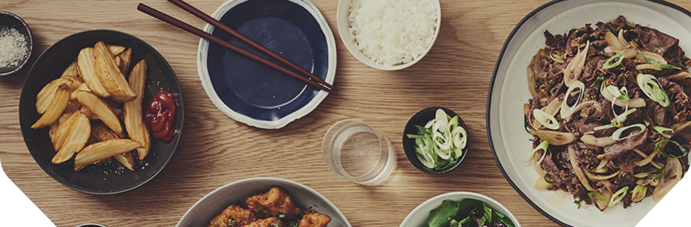

-
지구 60바퀴
총 판매 6억 그릇 1993년이후 판매된 한솥의 도시락은
6억 그릇에 달합니다.
도시락 용기의 길이를 모두 더해 띠를 만들면
지구를 60바퀴 감을 수 있답니다. -
온 국민이 3그릇 씩
1억 5천만 치킨마요 2003년부터 지금까지 판매된
치킨마요 1억 5천만 그릇은
5000만 국민 모두가
3그릇 씩 먹을 수 있는 양입니다. -
해외 레시피개발
1150일 1993년 이후 한솥 식구들이
레시피 개발을 위해 떠난
해외출장 기간은 1150일에 달합니다.
꼬박 3년 2개월을 해외에서 체류한 셈입니다. -
200여종의
메뉴 출시 1993년 이후 한솥에서 지금까지 개발한
반찬수는 총 200여종.
이를 위해 메뉴개발팀에서 테스트 했던 메뉴는
10일에 1개 꼴로 총 1,000여종이 넘습니다.
브랜드 유산
BRAND LEGACY

우직한 한솥이
지금까지
쌓아온 것 한솥은 ‘따끈한 도시락으로 지역사회에 공헌한다’ 라는 기업이념 아래,
고객이익을 최우선으로 하며 엄선된 좋은 식재료만 사용하는
대한민국 외식종합기업 시장을 리드하는 글로벌 종합외식기업입니다.
따끈한 한 끼로 대한민국의 힘이 되겠다는 신념으로 한 걸음 한 걸음씩 나아간 한솥의 발자국들.
지난 27년 동안 한결 같은 마음으로 고객을 위해 성장하고 있는, 우리는 한솥입니다.
지금까지
쌓아온 것 한솥은 ‘따끈한 도시락으로 지역사회에 공헌한다’ 라는 기업이념 아래,
고객이익을 최우선으로 하며 엄선된 좋은 식재료만 사용하는
대한민국 외식종합기업 시장을 리드하는 글로벌 종합외식기업입니다.
따끈한 한 끼로 대한민국의 힘이 되겠다는 신념으로 한 걸음 한 걸음씩 나아간 한솥의 발자국들.
지난 27년 동안 한결 같은 마음으로 고객을 위해 성장하고 있는, 우리는 한솥입니다.